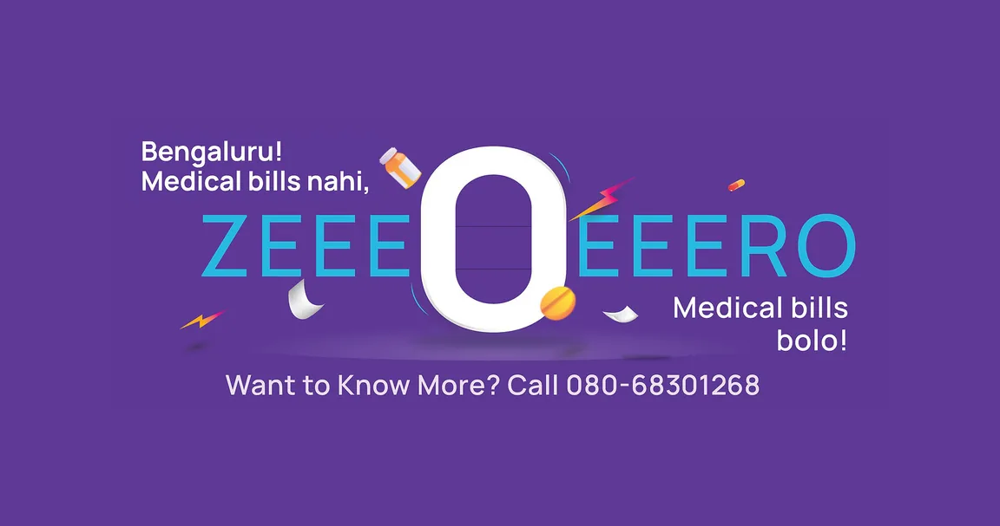
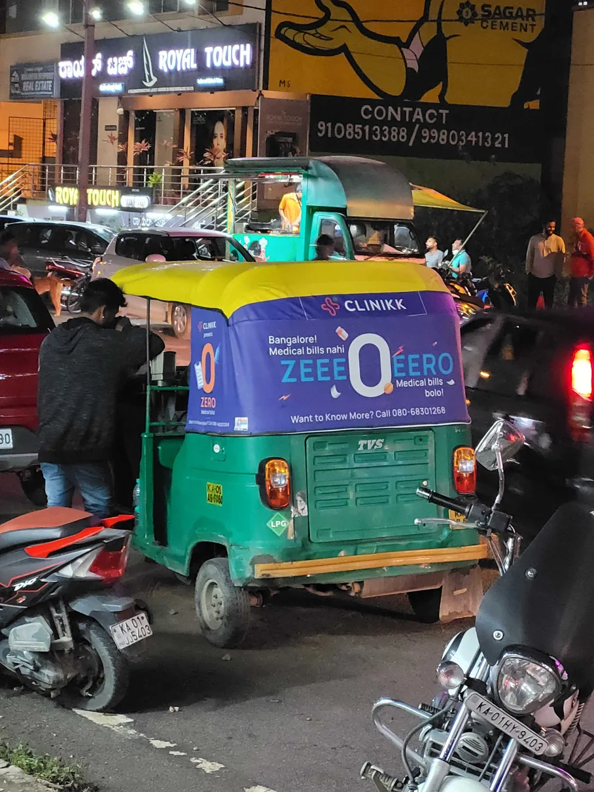
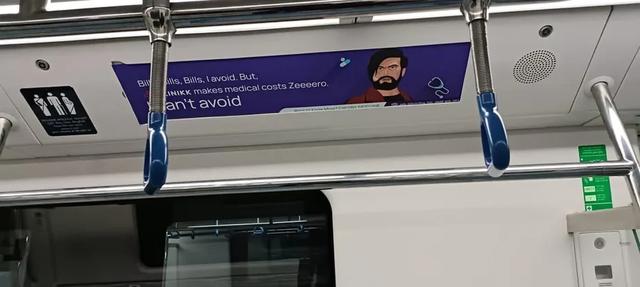
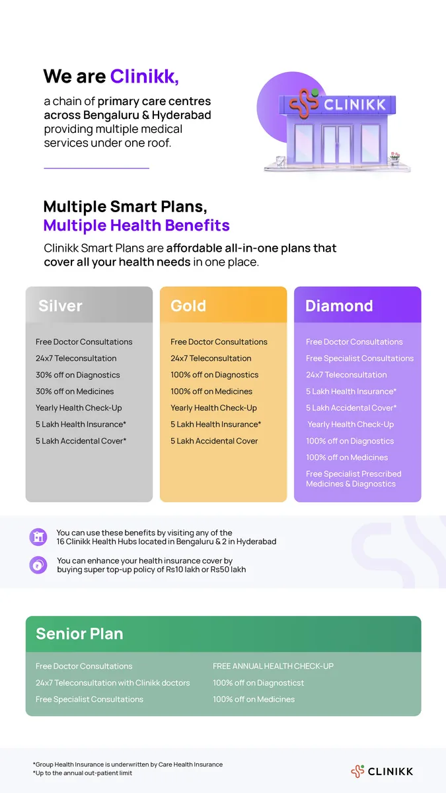
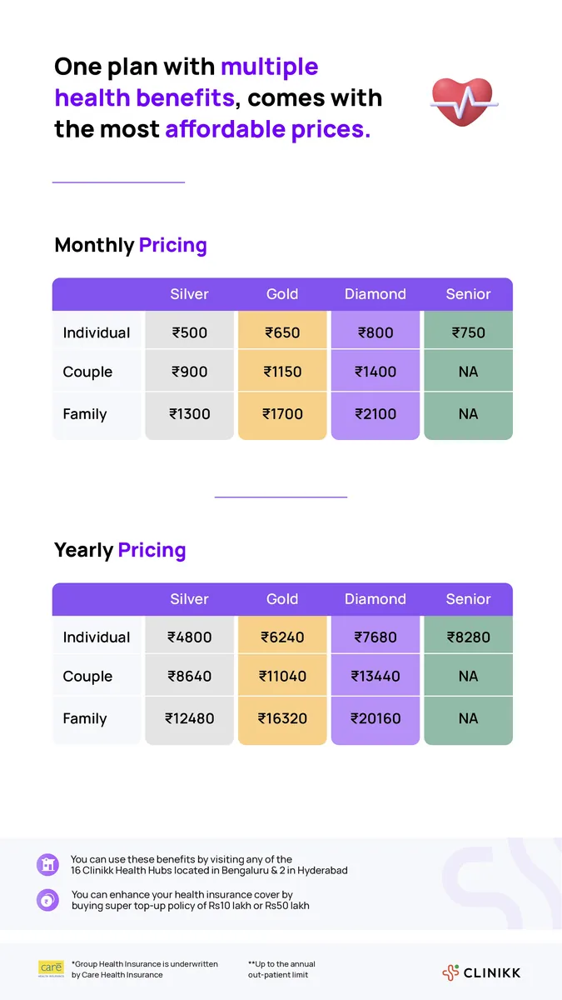
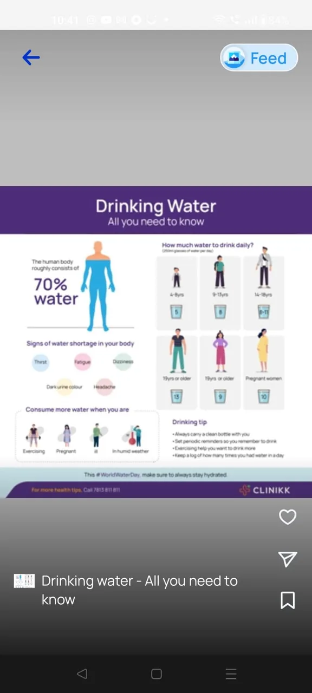

Clinikk · 2021–2023Zero
Medical
Bills
A subscription healthcare brand with a blunt promise, taken to bus shelters, metro coaches, autos and the waiting rooms of its own health hubs.

Clinikk's offer was blunt: a Smart Plan subscription, and zero medical bills at the point of hospitalisation. I was the content strategist in-house, writing across BTL, collateral, app and screen. That meant outdoor cards for autos, metro and bus shelters, a brochure and booklet, a mute video for the health hubs, and health content for the app and social.
The hard part was the fine print. The booklet had to explain four plan tiers, monthly and yearly pricing, waiting periods, permanent exclusions, room-rent limits and super top-ups without sounding like a policy document. I researched the categories, then wrote them in the same voice as the outdoor work: short, plain and specific about what the subscriber actually gets.
Say zero, then
answer the fine print.
The campaign had one memorable word and a wall of scepticism behind it. So the outdoor work leaned on the promise, zero medical bills, and the collateral did the unglamorous work of proving it. Same voice across both: the line that stops you at the bus shelter, and the page that answers the question you ask next.
- Outdoor BTL: auto hoods, metro coach cards and bus-shelter sites across Bengaluru.
- Brochures and booklets covering four Smart Plans, pricing, waiting periods, exclusions and top-ups.
- Health content series for the app and social: insurance terms, vaccination, nutrition, hydration.
- A mute in-hub video for Clinikk Health Hub waiting areas.
- Priming journeys on LSQ and employee-branding newsletters.





Client: Clinikk. Campaign creatives reproduced with permission.